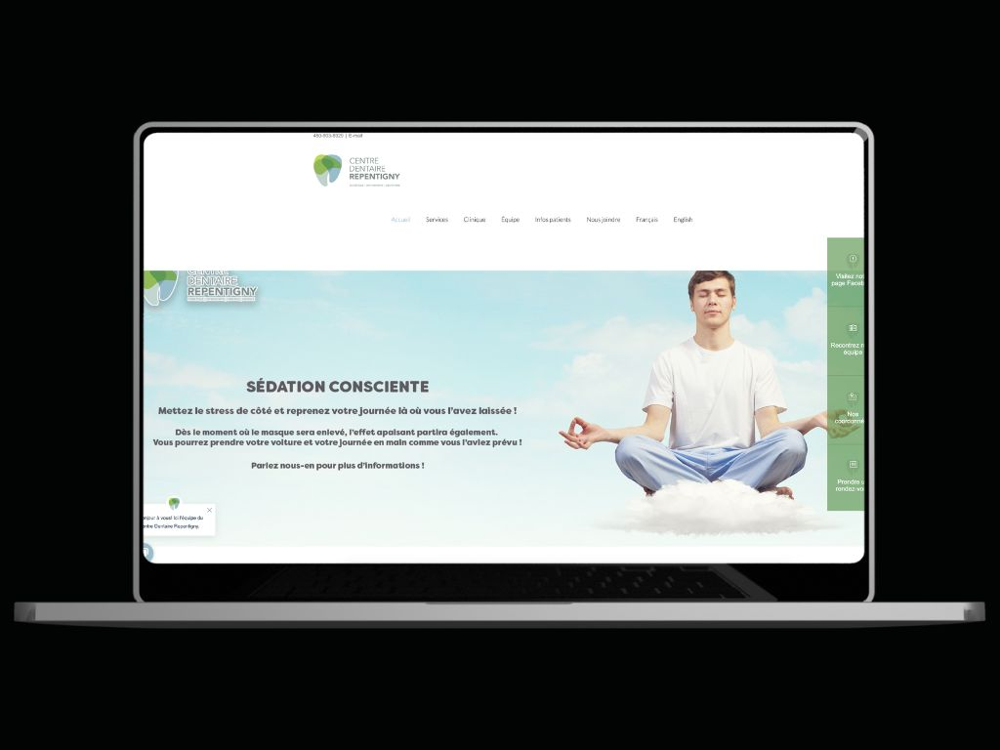

<div class="load-data">
  <div class="popup-main-content">
    <div class="container">
      <div class="row">
        <div class="col-md-12">
          <div class="portfolio-details-title">
            <h2>(Update needed) Website - Centre dentaire Repentigny</h2>
          </div>
          <!-- /portfolio-details-title -->
        </div>
        <div class="col-lg-12">
          <div class="portfolio-details-media">
            <div class="row">
              <div class="col-lg-12 col-md-6">
                <a href="https://centredentairerepentigny.com/" target="_blank">
                  
                </a>
              </div>
            </div>
          </div>
        </div>
        <div class="col-lg-6">
          <div class="portfolio-details-info">
            <div class="tags">
              <span>Client : </span> Centre dentaire Repentigny - Dr. Benoît
              Carrier
            </div>
            <div class="tags"><span>Category : </span> Website</div>
            <div class="tags"><span>Date : </span> 30/January/2016</div>
            <div class="tags">
              <span>Website: : </span>
              <a href="https://centredentairerepentigny.com/" target="_blank"
                >www.centredentairerepentigny.com</a
              >
            </div>
          </div>
          <!-- /portfolio-info -->
        </div>
        <div class="col-lg-6 mt-40 mt-lg-0">
          <p class="portfolio-description lh-fix">
            I initiated this project without any preconceived notions,
            developing every aspect from scratch. The design is fully
            responsive, ensuring a seamless user experience across different
            devices such as mobiles, tablets, and laptops, with a focus on
            optimizing functionality through UX/UI design.
          </p>
          <!-- /portfolio-description -->
          <p class="portfolio-description mt-30">
            The client expressed a preference for vibrant hues in their website
            design. Although the website has not undergone major updates since
            2016, it still functions on most popular internet browsers. The
            client is considering the possibility of rejuvenating with me the
            website to ensure it remains up-to-date and engaging for their
            audience.
          </p>
          <!-- /portfolio-description -->
        </div>

        <div class="col-md-12">
          <div class="portfolio-details-nav d-flex justify-content-between">
            <div>
              <a class="portfolio-link" href="portfolio-details-05.html"
                >Previous Project</a
              >
            </div>
            <div>
              <a class="portfolio-link" href="portfolio-details-07.html"
                >Next Project</a
              >
            </div>
          </div>
          <!-- /portfolio-details-nav -->
        </div>
      </div>
    </div>
  </div>
</div>
